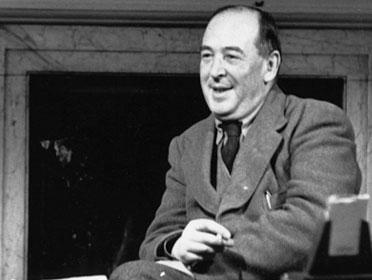

 "We all want progress, but if you're on the wrong road, progress means doing an about-turn and walking back to the right road; in that case, the man who turns back soonest is the most progressive." - C.S. Lewis
| Book | Author | Publisher |
| Pilgrim's Progress | C S Lewis | Chronicle Books |
| Space Trilogy | C S Lewis | Chronicle Books |
| The Chronicles of Narnia | C S Lewis | Chronicle Books |